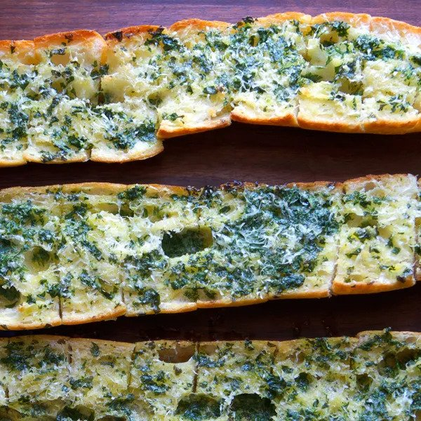

Garlic Bread

Description
The following is a recipe from Bon Appétit. The recipe is by Melissa Hamilton and Chrisopher Hirsheimer. The photograph is by Hirsheimer Hamilton.
I have made this recipe a few time, with a few tweaks and found it to be delicious! I usually add mozzarella cheese to one side and omit the parsley all together.
Ingredients
- 1/2 cup (1 Stick) unsalted butter
- 1/4 cup extra-virgin olive oil
- 2 cloves garlic, peeled, crushed
- Large handful of fresh flat-leaf parsley leaves, finely chopped
- 1 baguette
- Kosher salt
- Finely grated Parmesan
Steps
- Preheat oven to 450°. Heat butter and oil in a small saucepan over medium heat. Add garlic and parsley and cook, stirring occasionally, until butter is completely melted.
- Slice bread in half lengthwise, then place on a baking sheet and brush cut sides with butter mixture.
- Slice crosswise 1" thick, without cutting all the way through; season with salt and top with Parmesan. Bake until golden, 10-15 minutes.